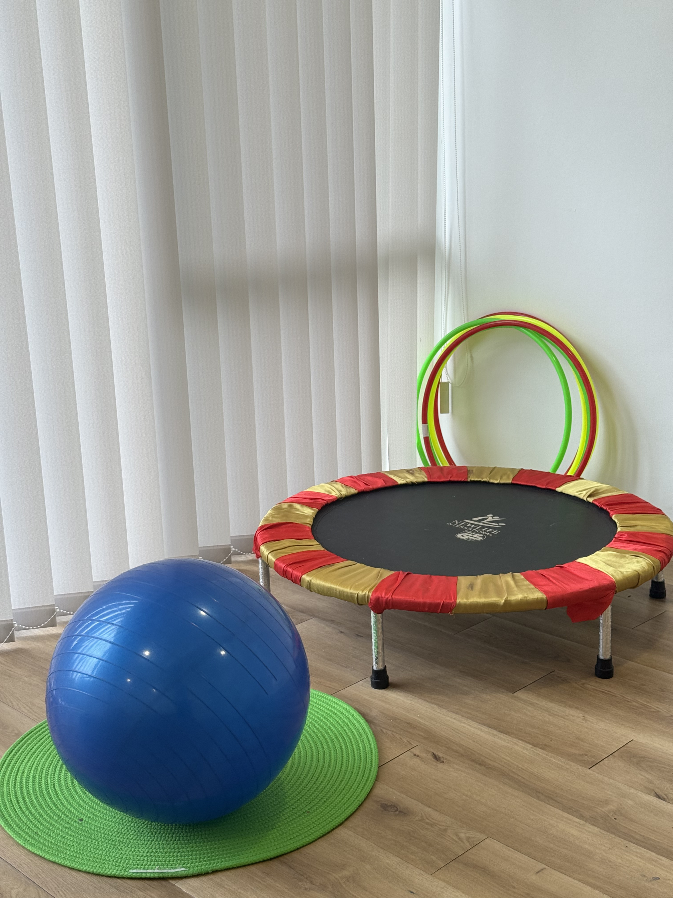
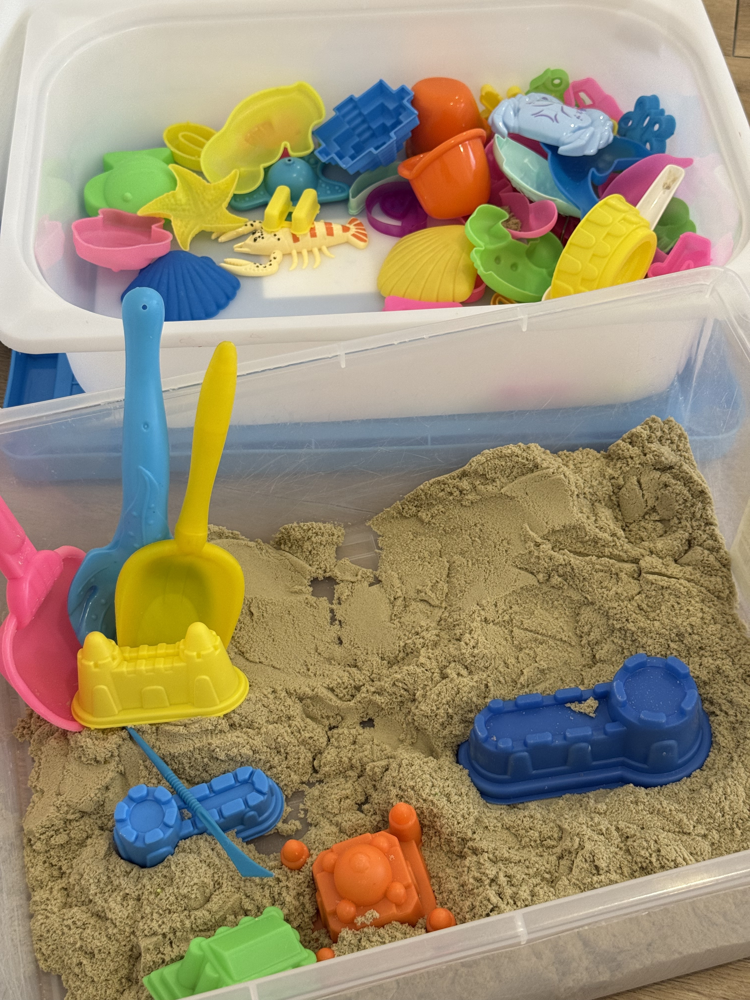
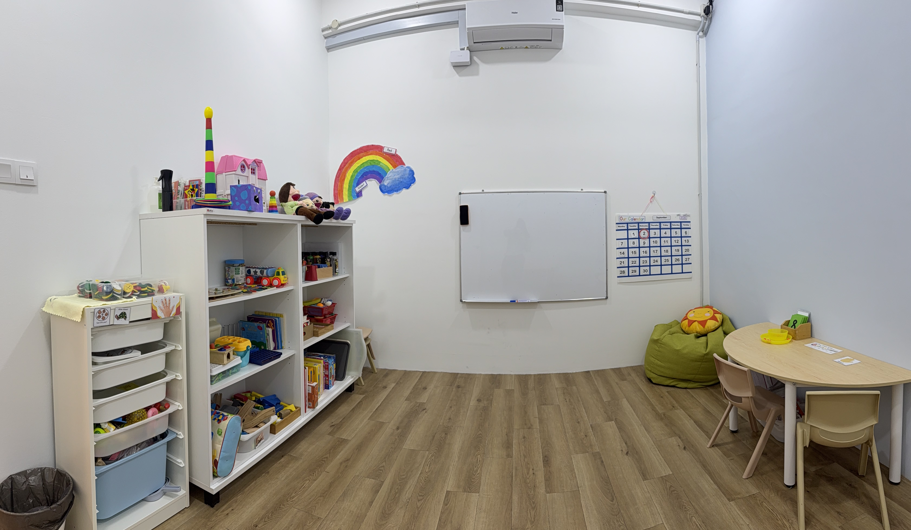
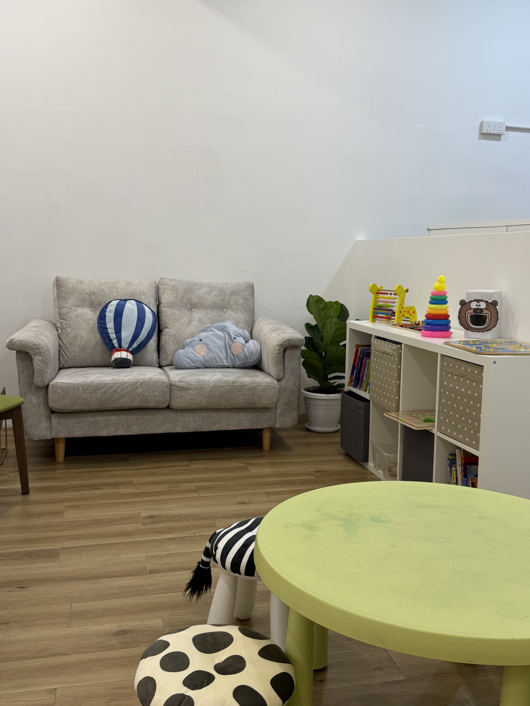
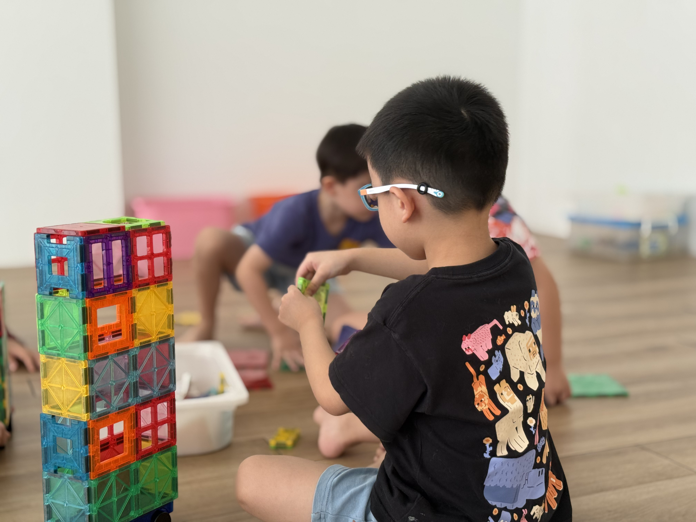
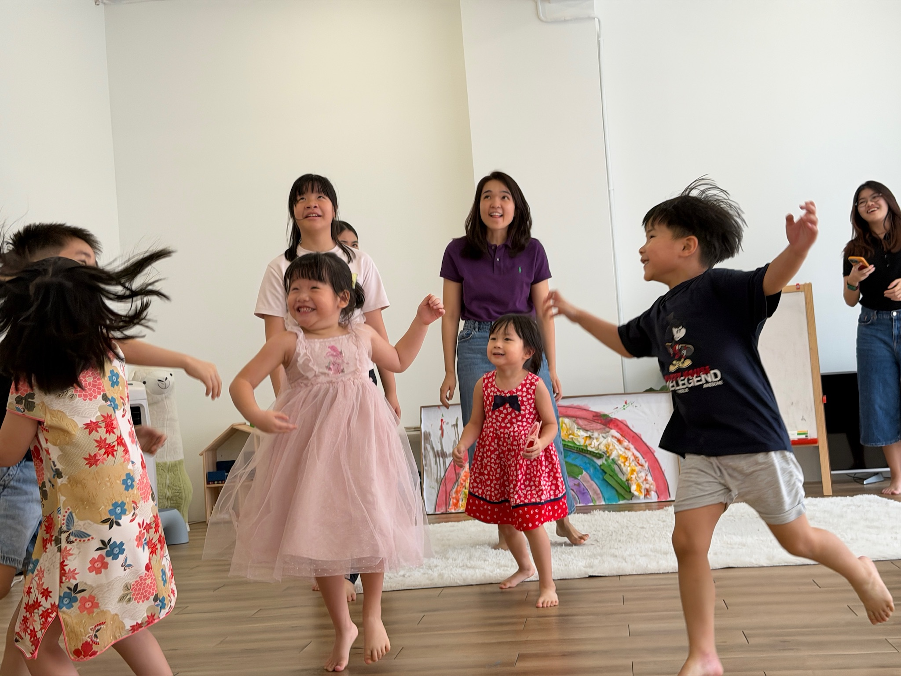
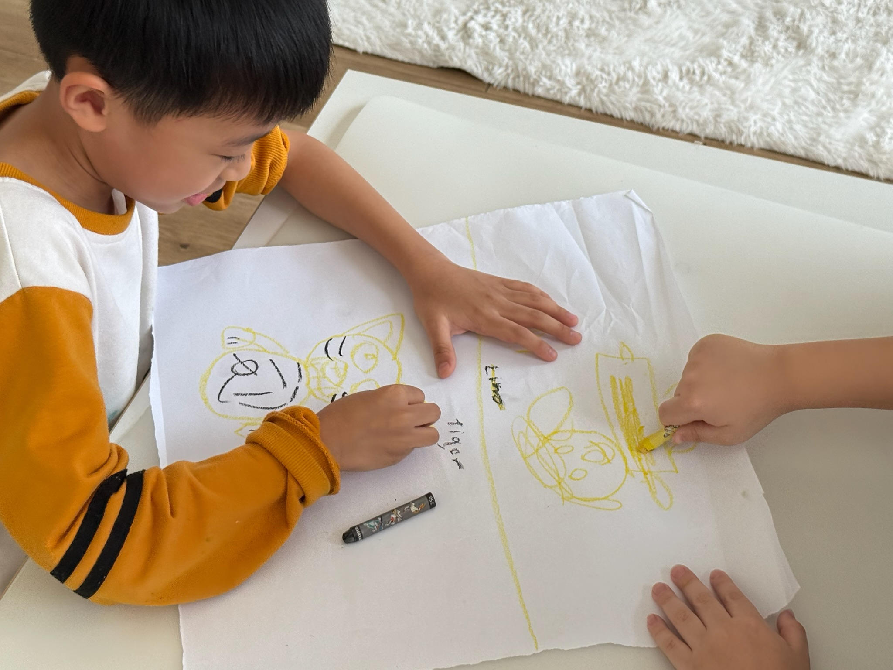
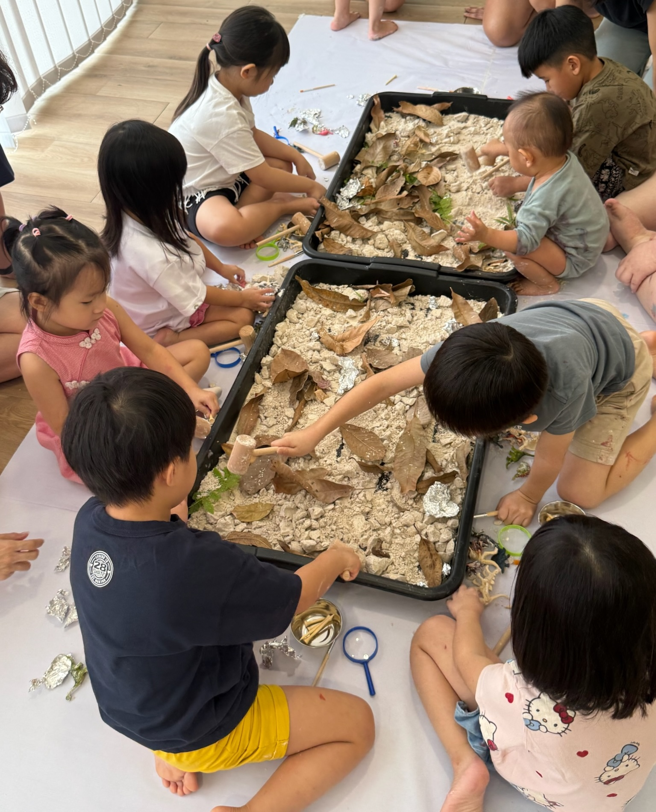
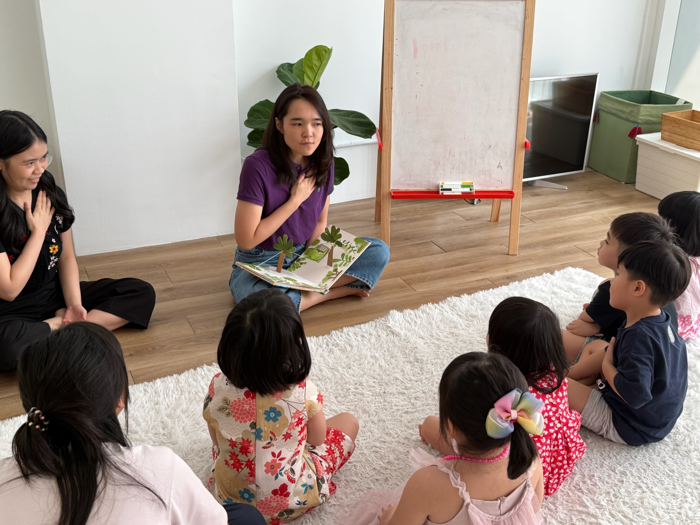

专注、情绪、表达、规划、独立。学校期望孩子具备这些能力，却很少真正教导。我们来教：通过周末小组俱乐部、一对一支持，或从一次完整的评估开始。









“我儿子在这里上了早期干预课程，进步很大。他很喜欢来这里学习，老师也很有耐心。”
“我的孩子比较敏感，很难集中注意力。上完入学准备课程后，他变得更沉稳，更懂得控制情绪，也更专注了。”
“这里训练孩子解决问题的能力，这对入学准备很重要。老师们很亲切，我会把这个课程推荐给每一位家长。”
“每堂课都很有收获。他学到新的概念和想法，也学到宝贵的人生道理，这些将让他（也让我们做家长的）受益一生。”
难以集中注意力？
情绪起伏很大？
总是要一再提醒？
读书很吃力？
不容易交到朋友？
还没准备好上学？
让孩子重新找回学习的自信。
记忆 · 推理 · 解决问题 · 灵活变通
专注 · 规划 · 条理 · 时间管理 · 自我控制
读书方法 · 温习策略 · 笔记技巧 · 功课习惯 · 拆解任务
处理挫折感 · 面对错误 · 应对压力 · 坚持不放弃
表达想法 · 开口求助 · 团队合作 · 交友技巧
主动做事 · 完成任务 · 为自己发声 · 独立学习
教孩子学什么。
教材内容、课程大纲、练习试卷。这些都有用，也有不少孩子需要。
教孩子怎样学得更好。
先了解
弄清楚孩子是怎样学习的，并提供清楚的书面报告和后续建议。
3–4 周 · RM 2,200 起幼儿园 · 小学
不只是学 ABC 和 123，更培养孩子迈向下一阶段所需的情绪、社交和独立能力。
上午班 · 小组教学Brain Booster 脑力提升班 · Friendship Club 友谊俱乐部
加强学习背后的思考能力，或培养友谊与社交技巧。周末小组形式。
4 周 · 1.5 小时 · RM 399EIP
为年幼孩子提供小组支持，由教育心理学家督导。
每月 RM 2,400 起IEP · 一对一
根据孩子的需要量身设计的一对一支持，而不是套用固定课程。
RM 200 / 堂我们先了解孩子是怎样学习的，再决定该怎样帮助他。
每一份支持都从孩子的需要出发，而不是套用固定的课程。
动手做、玩中学、贴近生活。孩子在亲身体验中学得最牢。
我们着重的，是孩子能带回家、用在学校的学习成果。
Xue Min 曾培训教师、带领儿童工作坊，也曾在雪兰莪州跨专业的 PROSPER 筛查计划中担任评估员。看看她的工作 →
工作坊、玩泥乐和假期课程。一样是有计划的玩，只是跳出了平日的作息。
颜料、泡沫、水和泥巴。动手的感官游戏，每一团混乱里都藏着一项技能，也不用担心弄脏。
欢迎查询日期及报名和孩子一起学习。一起动手体验活动，了解这些活动为什么有效，再把点子带回家，在餐桌上继续玩。
欢迎查询日期及报名学校放假时，孩子可以搭建、动手做、挑战团队任务。一样是孩子爱玩的活动，每一天背后都有计划。
欢迎查询日期及报名第一时间获知新的开课日期和假期名额。
通过 WhatsApp 接收最新消息 →告诉我们孩子的年龄、您观察到的情况，以及希望得到什么样的帮助。我们会坦白地告诉您哪个课程最适合，即使答案是“都不适合”。
自信、有能力、能独立的学习者。